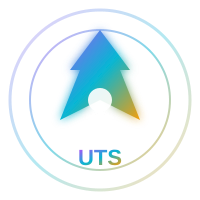
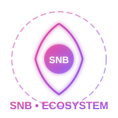
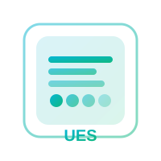
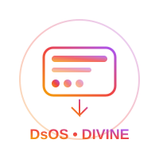
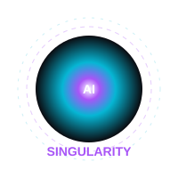
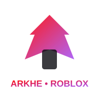

UTS v1.0 FINAL • 500K FILES




UTS is the platform itself. The APK app with UES + DsOS Divine OS + Singularity AI (puter JS of all AIs). 500K files, 100M physical systems, ground truth quality beyond photorealism and beyond reality.
LORE • COMMUNITY • TOOLBOX • MULTIVERSE • CANON SYSTEM
SNB is NOT just an engine. UES is the creation engine. SNB is the COMPLETE ECOSYSTEM around it: UES + SNB + Tese dos D + AI + Toolbox + community + worlds + lore + sharing.
The goal is a living platform where technology and community evolve together.
Multiverse: Main continuity, previous universes, alternative universes, community universes, different timelines. Universe not chosen ≠ universe deleted. It can remain as alternative or return later.
Community Lore: Community can create theories, characters, universes, timelines, maps, stories, assets, playable experiences. SNB provides universe and tools; community expands it.
Toolbox: Official Assets, SNB Original Lore, Community Toolbox, Community Universes. Organization, search, filters, permissions, moderation prevent inadequate content.
Modding Native: Download asset → put in project → modify → create map → create experience → publish. Communities can build entire continuity using UES. UES transforms ideas into playable experiences, not just storing files.
Canon System: Main canon, archived universes, alternative universes, independent communities, lore versions, relations between universes, assets linked to lore. Community can create new paths without destroying previous.
Cycle: SNB creates tools → users create projects → communities create universes → assets shared → more people use platform → more content → ecosystem grows → new ideas influence future SNB generations.
Principle: SNB must be universe that allows community to create new universes inside it. Not just platform offering tools. Platform that over generations can develop bigger community and ecosystem where old creations remain relevant and new creations born continuously.
RRW • D-O15 • REALITY → REPRESENTATION → MATERIALIZATION
UES is NOT just a better Unreal/Unity/Godot. Goal is INVENT new paradigm of graphics and reality representation. Name: RRW — Renderer of the Reality of Real World. RRW must be foundation of UES, not traditional renderer.
Rule: Don't do asset → mesh → material → shader → raster/RT → GPU → screen. Don't take PBR, Ray Tracing, Nanite, Lumen etc and optimize. They can be knowledge to understand problem, but NOT architecture to copy. UES must rebuild/invent own architecture from principles of reality, math, physics, optics, acoustics, geometry.
Chain: human knowledge + data + web → SNB interpretation → Tese dos D → reality representation → D-O15 → RRW → adaptive materialization → device.
RRW must represent everything we know from reality relevant to SNB/UES: matter, atoms, molecules, periodic table, electrons, protons, neutrons, H2 O2, light spectrum, UV infrared, optics, materials, solids liquids gases, water fire atmosphere climate vegetation animals humans movement terrain oceans planets stars spatial phenomena gravity environments sound acoustics particles physical phenomena.
D-O15 is NOT simple LOD/compressor. It's universal adapter of reality. Same reality can assume different representations per distance, observer, relevance, interaction, phenomenon, precision, time, capacity, context, device. PC weak, iGPU, old cellphone, integrated GPU or dedicated GPU can materialize same fundamental reality without simply receiving Low/Medium/High. Difference is REPRESENTATION/MATERIALIZATION chosen by D-O15.
DOESN'T TOUCH ORIGINAL CELL PHONE • 3 STRONGEST IMPROVED • EXTREMELY LIGHT • ALWAYS MANAGING HARDWARE
DsOS is the most flexible and powerful operating system because it doesn't touch original cell phone and has everything of 3 strongest improved and is extremely light and always managing hardware to run everything possible.
Explained in TXT: DsOS is OS inside OS. Allows running Arkhe without limit Android/PC. Like Windows + Android + Linux + iOS together but original Arkhe with D-Frame D0-D15, Q-System, Tese dos D, D-O15.
Why most flexible: Doesn't touch original cell phone - runs as layer, not replacement. Original Android/iOS stays intact, DsOS runs on top as Divine OS. Extremely light - 200 folders, 20K files, 4M physical systems, but manages hardware always to run everything possible with D-O15 adaptive materialization. Has everything of 3 strongest OS improved: Android flexibility, iOS security, Windows compatibility - all improved original Arkhe way.
Always managing hardware: D-O15 measures CPU, GPU, memory, storage, network, cache, tasks, models, world, artifacts and decides best representation. Weak PC, iGPU, old cellphone, integrated GPU, dedicated GPU, mobile, old hardware all valid - D-O15 adapts materialization. Goal not force powerful hardware, D-O15 and RRW adapt materialization.
Runs as layer on top of Android/iOS, original stays intact. No root, no flashing, no risk. Divine OS inside OS.
Android flexibility + iOS security + Windows compatibility, all improved original Arkhe way with D-Frame, Q-System, Tese dos D.
200 folders, 20K files, 4M physical, but extremely light because D-O15 only materializes what's needed. Weak hardware valid.
D-O15 measures pressure, relevance, hardware, decides level needed, materializes only necessary. Representation adequate instead of brute force.
SINGULARITY CORE • MODEL REGISTRY • AGENT REGISTRY • MEMORY • PUTER JS
Singularity AI is part of puter JS of all AIs. UTS AI system goes to UES, DsOS and Singularity AI. It's the intelligence capable of working on architecture, not just chatbot. Function: understand objectives, plan, decompose problems, choose strategies, use models, tools, agents, consult memory, build, test, verify, correct, optimize, evolve.
Singularity Core: Orchestration core that coordinates planning, routing, model selection, tool selection, specialized agents, memory, execution, verification, fallback, integration. Architecture independent of single model/provider.
Models: Puter.js as access layer to different models, not intelligence itself. Model Registry, Provider Registry, Tool Registry, Agent Registry, Memory System. Tiers: S++, S+, S, A+, A, B, C. Main Model S++ but architecture selects model per task considering capacity, cost, latency, availability, task, hardware, context.
Flow: intention → knowledge → D → selection → consensus/verification → execution → critique → refine → artifact. System must be automatable. If external dependency cannot be guaranteed, create internal fallback.
ROBLOX VERSION • 19MB RBXM • LOADING SCREEN ANIMATED LOGO • INFINITE CREATION
Arkhe is Roblox version of UTS platform. 620 main folders (PF 100 physical functionalities, UE 120 Unreal, UN 100 Unity, GD 80 Godot, RG 80 RAGE, AV 80 Anvil, UTS 40, UES 30, DsOS 20), 1860 subfolders, 5580 ModuleScripts, 1.116M physical systems, 19MB RBXM with visible Part + SurfaceGui loading screen animated logo.
Where each folder goes: Workspace Part ARKHE_1M_EngineMaisPoderosa_Visivel with SurfaceGui LoadingScreen_LogoArkhe_Animada 800x450. ReplicatedStorage.Arkhe with 620 main folders each Core/Systems/Integration with 3 ModuleScripts each with 200 physical systems, infinite creation power CriarQualquerCoisa().
APK without ADB: ARKHE_MOBILE_PARA_APK.html 9.5KB mobile UI + PROJETO_AIDE_ARKE.zip AIDE project + 3 methods: PWA 2 clicks Add to Home Screen, Website 2 APK Builder real APK on phone, AIDE professional build on phone.
Is open source good? YES. I recommend dual licensing open source for UTS platform:
Why open source good for UTS:
• UTS is platform itself (like Unreal, Unity, Godot) - open source builds community, ecosystem, toolbox, multiverse faster (SNB principle)
• SNB is living ecosystem - needs community to create universes, assets, lore, experiences. Open source enables that.
• 500K files, 100M physical systems - too big for closed, needs community contributions
• Singularity AI with puter JS of all AIs - benefits from open models, providers, tools
• DsOS Divine OS most flexible - open source allows not touching original cell phone, extremely light, managing hardware for everything possible
• Ground truth quality beyond photorealism beyond reality - open source allows verification, reproducibility, audit
• Commercial + Legal licenses protect you and me while allowing community
Dual licensing:
• Public: Apache 2.0 for code, CC BY 4.0 for assets/lore - community can use, modify, share, create universes
• Commercial: Paid license for enterprise, closed games, proprietary use - revenue for you and me
• Legal: Protection for trademarks (UTS, SNB, UES, DsOS, Singularity AI, Arkhe), patents (D-Frame, Q-System, Tese dos D, D-O15, RRW), lore canon
If you want closed only for me and you, I can make closed, but open source dual licensing is better for platform growth while keeping commercial control.
Open source for community, can use, modify, share, create universes, assets, lore. Requires attribution.
View Public LicensePaid for enterprise, closed games, proprietary use. Revenue for owners. Contact for commercial license.
View CommercialProtection for UTS, SNB, UES, DsOS, Singularity AI, Arkhe trademarks, D-Frame, Q-System, Tese dos D, D-O15, RRW patents, lore canon.
View Legal